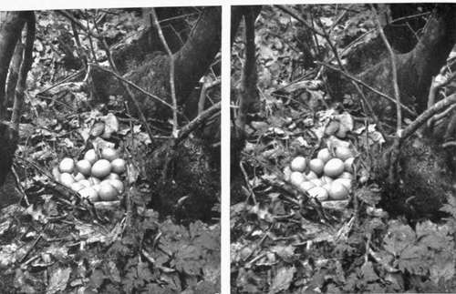

Chapter III. The Lens
Description
This section is from the book "Nature Photography For Beginners", by E. J. Bedford. Also available from Amazon: Nature Photography for Beginners.
Chapter III. The Lens
The lens is one of the most important items in the Nature Photographer's kit, even if it is not the most important. I propose, therefore, in this chapter to deal with some points concerning its use, which, I am afraid, are not perfectly understood, even by some workers who have had a large amount of practical experience in taking photographs.
Curiously enough, although the lens is such an important item, a photograph can be taken entirely without its aid. It is necessary to remember, in this connection, that the photographic image on the sensitive plate is formed by the rays of light which pass through the lens and not by the lens itself, which only acts as an agent. If the lens be removed from the camera and a piece of card or, better still, thin sheet metal be inserted in its place so that no light can enter the camera except through a very small hole pierced through the centre of the card or metal, it will be found that a photograph can be obtained by means of this small hole. It is known as a " pin-hole/' although generally made by a fine needle. Such a contrivance, while practical for ordinary landscape or architectural work out of doors, is quite useless for Nature Photography, as the exposures required, even in a good light, may run into minutes, and if the light is poor might require an hour or more. Then, again, the definition given by the pin-hole is not critically sharp and clear, as it requires to be for accurate and scientific work.
It will be understood from what has been said that a lens of some sort is necessary, in order to collect the rays of light and enable us to obtain an image in a very short space of time.
It is quite impossible to describe all the kinds of lenses on the market. Their numbers are ever increasing, and great improvements are continually being made in their construction. As far as the Nature Photographer is concerned, lenses may be divided into two broad classes, namely, single and double; and in dealing with either we shall have to understand what is meant by Focal length, Aperture, Diaphragm or stop, Depth of focus, Size of image, Angle of view, and Covering power. In describing these terms I intend only to deal with them in a practical way.
Focal Length
This is the distance from the focussing screen to the lens, when the latter is focussed upon a distant object. The point in the lens to which the measurement should be made is the position of the diaphragm in the case of a doublet or the back surface of the lens itself if a single one. (This, although not scientifically accurate, is near enough for practical purposes.) Suppose it be found that this distance measures six inches, the lens would then be said to have an equivalent focus of six inches.
Aperture
The aperture may be described as the diameter of the lens in relation to its equivalent focus. In the case of the example mentioned above, if the lens of six inches equivalent focus had its largest working stop one inch in diameter, the effective aperture of that lens would be described as /6, that is, one-sixth of its focus.
Diaphragm Or Stop
Nearly all lenses are now fitted with what is known as an Iris diaphragm. This is generally controlled by a ring on the lens mount which on being revolved enlarges or reduces the aperture. The apertures in general use are f4, f5.6, f8, f11.3, f16, f22, f32, f45, f64. These were arranged some years ago by the Royal Photographic Society of Great Britain. Each is half the area of the one preceding it and requires double the exposure from f4 downwards. The relative exposures for any two stops may be found by squaring their values, e.g., the square of f4 is 16, the square of f8 is 64; therefore f8 requires four times the exposure of f4 and not twice only. This is an important point in practice and should not be overlooked. The rule for finding the relative exposure will apply to any aperture, whether those given above or any other, such as f6.3 or f6.5.
Fig. 8. Pheasant's Nest(x8 eggs).
Depth Of Focus
If a lens at full aperture be focussed on a comparatively near object, say one in the foreground of a landscape not more than ten or fifteen feet away from the camera, it will be found that the distance is not equally sharp at the same time, and if the distance now be made sharp by racking in the bellows of the camera, the part previously sharp will be found out of focus. In order to get both parts of the picture in focus a smaller stop must be used; in other words, the lens must be stopped down. If there is a considerable difference in the distance of the two objects, perhaps it will be necessary to stop down to /22 before they are both sharp. (I am now referring to scientific work only, as the photographer who goes in for work of a purely pictorial character will soon learn to use as large a stop as possible in order to obtain the sense of atmosphere and prevent all the planes of the picture being equally sharp. But we must remember that Art is not Nature.) The depth of focus of any lens depends upon the relation of its largest effective aperture to its focal length, and the larger this aperture is the less depth of focus there will be.
Size Of Image
The size of image made by any lens will depend upon its focal length. If, for example, with a six-inch focus lens we find the image of any object measures one inch long upon the ground glass screen of our camera, another lens of twelve inches focus would give the image of that same object two inches in length if used from the same standpoint, and so on in proportion. It will, therefore, be seen that the focal length of the lens used will govern the size of the representations of the objects we photograph on our plate.
Angle Of View And Covering Power
A lens is only able to define over a limited area, and at a certain point from the axis of the lens the definition will fall off rapidly. Suppose we use a six-inch focus lens working at f6 on a 12 x 10 camera. We should find that a circle of about six or seven inches diameter would be well covered by the image formed by the lens, and outside that the definition would be poorer until it fell off altogether. If the lens were a good one, by stopping it down to, say, f16 or f22, the covering power would be considerably increased, and we should then include, for that particular lens and plate, a wide angle. If now we were to replace the six-inch focus lens by one of eighteen inches focus we should find the 12x10 plate would be well covered to the corners. We might call this latter a medium angle lens on this plate, and if instead of 12x10 the camera were only 1/2-plate it would then be called a narrow angle lens if used on the latter camera, and its covering power would be more than sufficient for the 1/2-plate. This eighteen-inch or any other focus lens would, however, produce an image of any given object the same size, whether used on the 12 x 10 or 1/2 piate camera, and for a space of, say, three and a quarter inches on each side of the centre of the 12 x 10 plate the image would be identical with that obtained on the 1/2-plate.
Continue to:
Tags
nature, photography, art, birds, camera